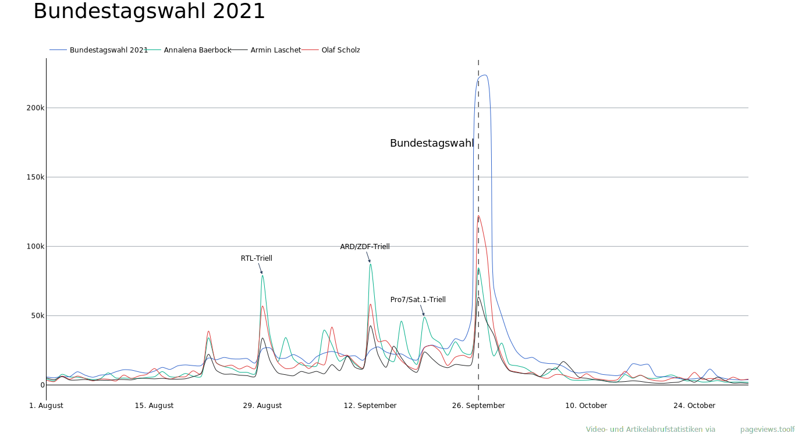

Liniendiagramm¶
Um das Generieren mehrerer Liniendiagramme zu vereinfachen, enthält mapping.py zwei Dictionaries mit jeweils einem Eintrag per Diagramm: data verfügt über die Daten für die allgemeinen Textelemente und den anzuzeigenden Zeitraum. In display sind für jede Linie Farben und Stärke festgelegt sowie individuelle Annotationen hinterlegt.
mapping.py am Beispiel Bundeskanzler (Deutschland)¶
sourcetext = "Video- und Artikelabrufstatistiken via <a href='https://pageviews.toolforge.org'>pageviews.toolforge.org</a> |"
data = {
"bu": {
"media": True,
"DE": "Bundeskanzler (Deutschland)",
"title": "Thema: Bundeskanzler*in",
"description": "<a href='https://commons.wikimedia.org/wiki/File:Was_macht_ein*e_Bundeskanzler*in%3F.webm' style='color:#A2A9B1'>Zum Video</a> | Was macht ein*e Bundeskanzler*in?",
"startdate": "2021-08-15",
"stopdate": "2021-12-31",
"sourcetext": sourcetext,
},
}
display = {
"br": {
"DE" : {
"show": True,
"color": color.ACCENT50,
"width": color.ARTICLE_TRACE_WIDTH,
"rank": 1,
},
"annotations": [
{
"x": "2021-09-25",
"y": 4500,
"xanchor": "right",
"text": "Bundestagswahl",
"font": {"size": 18},
"showarrow": False,
},
],
}
terrax.ipynb¶
Daten¶
import pandas as pd
import plotly.graph_objs as go
import color
import mapping
# Variablen
ABB = "btw21-0810" # br, btw21-0810, bu, ca, ka,
MEDIA_TOGGLE = mapping.data[ABB]["media"]
# Einlesen
rawdf = pd.read_csv(f"../data/{ABB}.csv", parse_dates=["Date"])
# Zeitfenster
timedf = rawdf[(rawdf["Date"] >= mapping.data[ABB]["startdate"]) & (rawdf["Date"] <= mapping.data[ABB]["stopdate"])]
# Medienaufrufe
if MEDIA_TOGGLE:
articledf = df.drop(columns={"Media"})
else:
articledf = df
articledf_columns = list(articledf.columns)
articledf_columns.pop(0)
Die Datumsangaben werden als datetime-Objekte gespeichert, um später unter anderem die Ausgabe von Monatsnamen anstatt von Zahlen zu ermöglichen. Leider ist dies nur auf Englisch möglich, da eine potentielle Lösung für deutsche Bezeichnungen unter Zuhilfenahme des locale-Moduls die Datumsangaben als String ausgibt.
locale.setlocale(locale.LC_TIME, "de_DE")
date_series = timedf["Date"]
date_series = [item.strftime("%d %B %Y") for item in date_series]
timedf["Date"] = date_series
Layout¶
layout = go.Layout(
plot_bgcolor=color.PLOT_BGCOLOR,
paper_bgcolor=color.PAPER_BGCOLOR,
showlegend=True,
xaxis={
"showgrid": False,
"showline": False,
"linecolor": color.AXIS_COLOR,
"ticklabelmode": "instant",
"tickformatstops": [
{"dtickrange": [None, 604800000], "value": "%e. %B"},
{"dtickrange": [604800000, "M1"], "value": "%e. %B"},
{"dtickrange": ["M1", "M12"], "value": "%B"}
]
},
yaxis={
"showgrid": True,
"showline": True,
"gridcolor": color.GRID_COLOR,
"linecolor": color.AXIS_COLOR,
"zeroline": True,
"zerolinecolor": color.AXIS_COLOR,
"zerolinewidth": 1,
"fixedrange": True
},
hovermode="x unified",
font={"family": color.PRIMARY_FONT, "color": color.AXIS_COLOR},
width=1366,
height=768,
legend={
"x": 0,
"y": 1,
"xanchor": "left",
"yanchor": "bottom",
"orientation": "h",
}
)
Die Angaben in tickfromatstops passen je nach angezeigtem Diagrammausschnitt die Anzahl und Formattierung der Ticks der X-Achse an.
Das Seitenverhältnis ist mit 16:9 fest vorgegeben. Dies ermöglicht die unkomplizierte Integration von Annotationen, welche bei einem abweichenden Seitenverhältnis verschoben würden. Da die Diagramme grundsätzlich als SVG-Dateien ausgegeben werden können, ist die Festlegung einer spezifischen Auflösung unkompliziert.
fixedrange=True behält bei der Auswahl eines Diagrammausschnitts die Diemensionen der Y-Achse bei.
hovermode="x unified" blendet beim Schweben über das Diagramm eine vertikale Linie sowie eine Anzeige der Y-Koordinaten der einzelnen Linien ein.
Diagramm¶
line = go.Figure(layout=layout)
if MEDIA_TOGGLE:
line.add_trace(
go.Scatter(
mode="lines",
x=df["Date"],
y=df["Media"],
name="Video",
legendrank=1,
legendgroup="Video",
line={"color": color.MEDIA_COLOR, "shape": "spline", "smoothing": 0.75, "width": color.MEDIA_TRACE_WIDTH}
)
)
for acount, article in enumerate(articledf_columns):
if mapping.display[ABB][article]["show"]:
line.add_trace(
go.Scatter(
mode="lines",
x=df["Date"],
y=df[article],
name=mapping.data[ABB][article],
legendrank=mapping.display[ABB][article]["rank"]+1,
legendgroup=article,
line={"color": mapping.display[ABB][article]["color"], "shape": "spline", "smoothing": 0.75, "width": mapping.display[ABB][article]["width"],}
)
)
Jede Linie wird in ihre eigene legendgroup eingebunden, da Plotly nicht die horizontale Anordnung deren einzelner Elemente unterstützt.
Textelemente¶
line.layout.annotations = [
go.layout.Annotation(
x=0, y=1.1, xref="paper", yref="paper", xanchor="left", yanchor="bottom", showarrow=False,
font={"size": 36, "color": color.PRIMARY_FONT_COLOR, "family": color.PRIMARY_FONT},
text=mapping.data[ABB]["title"],
),
go.layout.Annotation(
x=0, y=1.05, xref="paper", yref="paper", xanchor="left", yanchor="bottom", showarrow=False,
font={"size": 18, "color": color.SECONDARY_FONT_COLOR, "family": color.SECONDARY_FONT},
text=mapping.data[ABB]["description"],
),
go.layout.Annotation(
x=1, y=-0.1, xref="paper", yref="paper", xanchor="right", yanchor="bottom", showarrow=False,
font={"size": 12, "color": color.SECONDARY_FONT_COLOR, "family": color.PRIMARY_FONT},
text=mapping.data[ABB]["sourcetext"],
),
]
Diagrammspezifische Annotationen¶
Properties für go.Figure.add_vline() müssen leider im Skript hinterlegt werden, da die Auslagerung von x nach mapping.py Schwierigkeiten bereitet.
for anno in mapping.display[ABB]["annotations"]:
line.add_annotation(anno)
if ABB in ["br", "btw21-0810", "bu"]:
line.add_vline(
x="2021-09-26",
line_width=1,
line_dash="dash",
line_color=color.AXIS_COLOR,
)
if ABB == "bu":
line.add_vline(
x="2021-12-08",
line_width=1,
line_dash="dash",
line_color=color.AXIS_COLOR,
)
Ausgabe des Diagramms als SVG-Datei. Für den Export statistischer Bilder wurde zusätzlich kaleido installiert.
line.write_image("../export/line_btw21-0810.svg")
